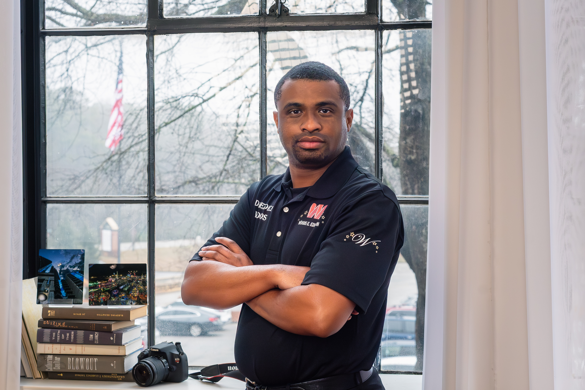
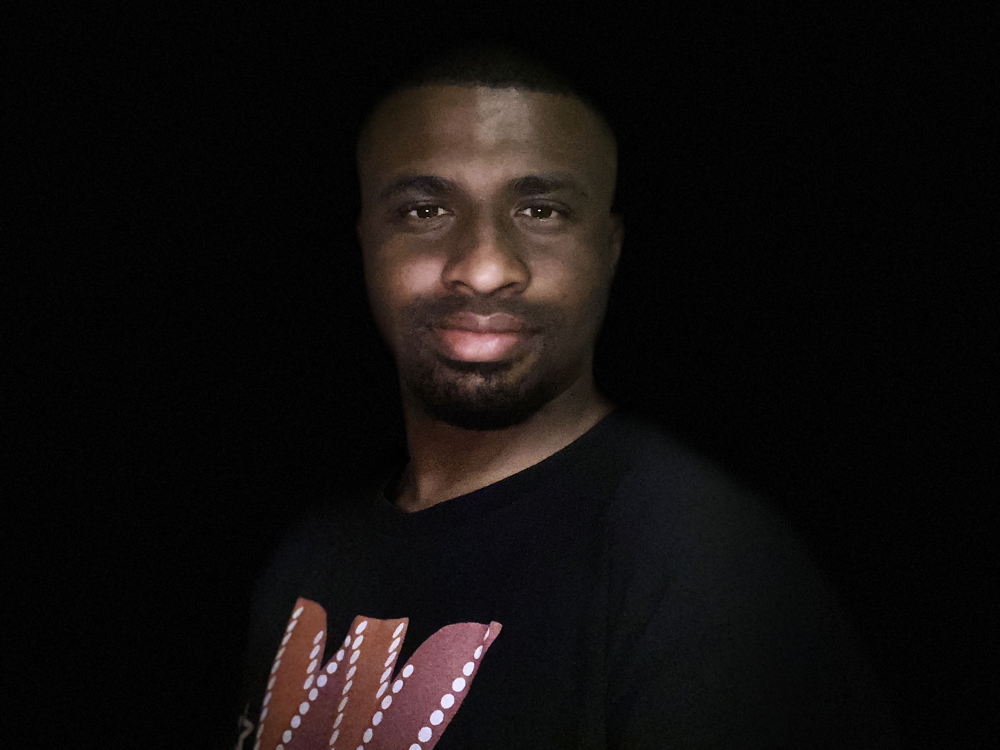

Woods E.Edition
Broadcasting & Media Production
The Company
Woods E. Edition is a startup operation that was founded on December 23,
2022 by Drezden Woods and will open for business as soon as the funding
necessary to begin operations has been obtained. Woods E. Edition believes in the power of storytelling through photography
and fashion. Every moment carries meaning, and every image has the potential
to become a lasting legacy. Founded with passion, vision, and creativity, the
Company specializes in capturing life's milestones with authenticity and
originality. Whether it is portraits, senior photos, maternity shoots, birthday
celebrations, engagements, or modeling sessions, Woods E. Edition
focuses on preserving the essence of every subject—every smile, every
expression, every emotion.

About Me
Photographer & Entrepreneur
Get To Know Me
The Entrepreneurial "Value" Version
"Based in Atlanta, I am a professional photographer and entrepreneur with 11+ years of experience capturing high-end portraits and dynamic events.
My work has been featured nationally in Teen Vogue (2021) and locally in Shoutout Atlanta, highlighting my commitment to professional excellence.
Beyond the lens, I leverage my degree in Web Design and Development to build strategic digital experiences.
I recently designed and launched my own website to showcase my portfolio and integrate e-commerce solutions.
I specialize in helping brands and individuals grow through high-quality visual content and smart digital strategy."
